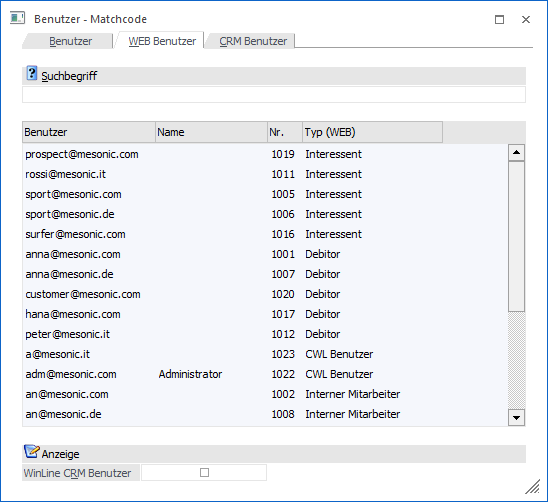
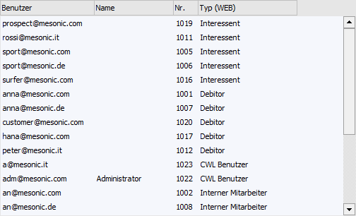
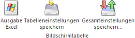

In dem Register "WEB Benutzer" werden alle angelegten WEB Benutzer angezeigt.

Ø Suchbegriff
Durch Eingabe und Bestätigen eines Suchbegriffs wird in der Benutzernummer, dem Login und dem Benutzernamen der WEB Benutzer gesucht und die Suchergebnistabelle entsprechend aufgebaut.
Tabelle "Suchergebnis"

In der Tabelle werden alle gefundenen WEB Benutzer angezeigt. Mit Hilfe der Taste Enter oder per Doppelklick kann ein Benutzer in das Ausgangsfeld übernommen werden.
Tabellenbuttons

Ø Ausgabe Excel
Durch Anwahl des Buttons "Ausgabe Excel" wird der Inhalt der Tabelle nach Microsoft Excel übergeben.
Ø Tabelleneinstellungen speichern
Die Spalten einer Tabelle können grundsätzlich an beliebige Positionen verschoben, bzw. in der Breite entsprechend angepasst werden. Durch Anwahl des Buttons "Tabelleneinstellungen speichern" werden die Einstellungen benutzerspezifisch gespeichert und bei dem nächsten Aufruf des Programmpunktes wieder vorgeschlagen.
Ø Gesamteinstellungen speichern
Im Gegensatz zu "Tabelleneinstellungen speichern" können mit "Gesamteinstellungen speichern" mehrere Tabellenaufbauten gespeichert und nach Wunsch geladen werden. Zusätzlich werden Sonderfunktionen der Tabelle (z.B. "Spalte gruppieren") ebenfalls bei der Speicherung bedacht.
Anzeige
Die Einstellung des Bereichs "Anzeige" wird benutzerspezifisch gespeichert.
Ø WinLine CRM Benutzer
Wenn diese Option aktiviert wurde, so werden in der Tabelle des Suchergebnisses neben den WEB Benutzern auch die WinLine CRM Benutzer angezeigt.